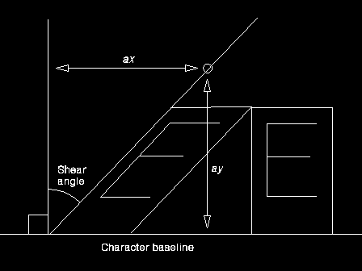

The coordinates of the point pptlAngle (x, y), specify integer values that identify the end coordinates of a line originating at (0,0) (see figure below). The vertical strokes in subsequent character strings are drawn parallel to the defined line. The top of the character box remains parallel to the character baseline (which may itself be rotated).
Whether this attribute is used when character strings are drawn depends on the type of font being used (raster or outline), and on the value of the character mode attribute (see GpiSetCharMode). If it is used, then with character directions of CHDIRN_TOPBOTTOM and CHDIRN_BOTTOMTOP (see GpiSetCharDirection) the whole string is tilted by the shear angle, in addition to the individual characters being sheared if the current font is an outline font.
This function must not be issued in an area bracket.
The attribute mode (see GpiSetAttrMode) determines whether the current value of the character shear attribute is preserved.